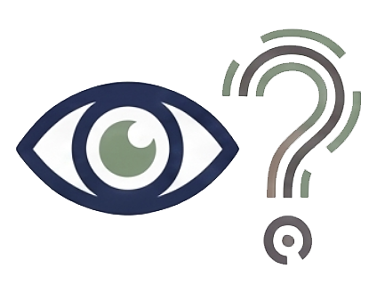

PBS MAGAZINE · PREMISE-BREAK SCHEMA
아이가 풀고 있는 수학·국어 문제 속에는 '당연하게 믿고 있는 전제'가 숨어 있습니다. 그 전제를 한 번 흔들면, 사고의 틀이 바뀝니다. PBS 매거진은 그 사건을 매주 한 편씩 기록합니다.
SAMPLE 런칭 전 샘플 콘텐츠입니다.

초5~고2
학년 맞춤
23편
사건 아카이브
매주 화요일
새 사건 발행
주제별 · BY TOPIC
No. 01 · 중등 1–3 · 6분
아이가 갇힌 건 난이도가 아니라 '식으로 풀어야 한다'는 전제였다.
No. 02 · 중등 1–3 · 6분
비문학에서 '조차·마저'가 등장하면, 글쓴이는 이미 한 가지를 전제로 깔고 있다.
No. 03 · 전 학년 · 4분
전제는 문장 밖에 있다. 그걸 찾는 4단계.
No. 04 · 중등 1–3 · 5분
'내가 어떤 전제 때문에 이 답을 골랐는지'를 적어야 한다.
No. 05 · 전 학년 · 7분
"빨리 풀어야 한다"는 전제가 아이의 사고를 얼려버린다.
No. 06 · 초등 5–6 · 5분
문장제가 어려운 건 계산이 아니라, 은연중 가정된 단위 관계를 놓쳐서다.
No. 07 · 고1–2 심화 · 7분
같은 데이터로 정반대 결론을 낼 수 있다. '통계=객관'이라는 전제를 깬다.
No. 08 · 고1–2 심화 · 7분
아이스크림과 익사 사고가 함께 오른다고, 둘이 인과일까. 제3의 원인을 찾아라.
No. 09 · 고1–2 심화 · 6분
뉴턴 역학이 '틀린' 게 아니라, 적용 범위를 벗어난 것이다. 가정의 힘.
No. 10 · 고1–2 심화 · 7분
100명 잘 뽑은 표본이 10,000명 자발 응답보다 정확하다. 왜 그럴까.
No. 11 · 고1–2 심화 · 7분
객관적이라는 지문도, 필자의 관점이 깔려 있다. 그 관점을 읽어내는 연습.
No. 12 · 초등 5–6 · 5분
공식 없이도 도형을 쪼개면 넓이가 보인다. '공식=유일한 방법'이라는 전제를 깬다.
No. 13 · 초등 5–6 · 5분
친구 수와 행복이 비례한다는 전제. 하지만 행복은 깊이에서 오는 걸 수도 있다.
No. 14 · 초등 5–6 · 6분
교과서도 누군가 쓰고 고른 결과물. '객관적 사실'이라는 전제를 의심해본다.
No. 15 · 중등 1–3 · 6분
빠름=잘함이라는 등식. 느리게 판 한 문제가 열 문제를 여는 이유.
No. 16 · 고등 1–2 · 6분
기록=진실이라는 전제. 기록되지 않은 목소리를 상상하는 힘.
No. 17 · 고등 1–2 · 7분
같은 사건도 어떻게 보도하느냐에 따라 다른 인상. 프레임을 읽는 법.
No. 18 · 고등 1–2 · 5분
틀림=실패라는 전제. 시도 자체가 학습이라는 다른 틀로의 전환.
No. 19 · 고등 1–2 · 6분
전공=취업이라는 등식. 변하는 세상에서 진로를 다르게 보는 법.
No. 20 · 중1–3 심화 · 6분
방정식은 반드시 해가 있다는 전제. 하지만 해가 없거나 무수히 많을 수 있다.
No. 21 · 중1–3 심화 · 5분
양변에 음수를 곱하면 부등호가 바뀐다. 왜? 그 당연함 속에 숨은 전제.
No. 22 · 중1–3 심화 · 6분
'모든 사람은 죽는다' — 이 추론이 성립하려면?
No. 23 · 중1–3 심화 · 6분
두 사례가 비슷하다고, 같은 결론이 나올까? 유추의 숨은 전제.
매주 화요일, 새로운 사건이 한 편씩 올라옵니다.
WHAT IS PBS?
다니는 학원은 그대로 두세요. PBS는 아이가 풀고 있는 문제 하나를 다르게 바라보는 연습을 더합니다. 전제를 찾고(Discover), 깨뜨리고(Break), 새 틀로 다시 세우는(Rebuild) — 하루 10분, 4단계.
전제 찾기
Discover
전제 폭파
Break
새 틀 세우기
Rebuild
습관화
Consolidate
주간 뉴스레터
3분이면 읽는 한 편의 글. 부모와 아이가 같이 볼 수 있는 '이번 주의 사건'을 메일로 보내드립니다.
SAMPLE 런칭 전 — 지금 구독하면 첫 50명에게 6개월 무료 제공 예정.